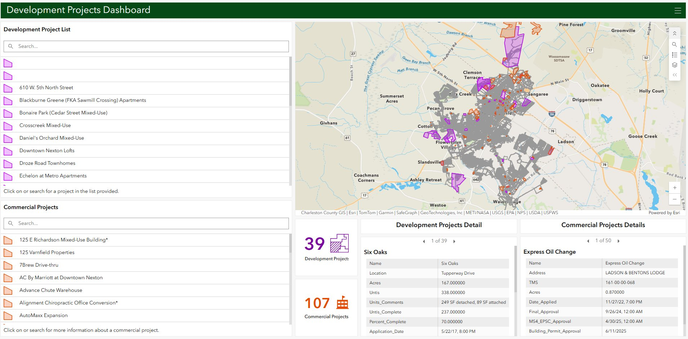
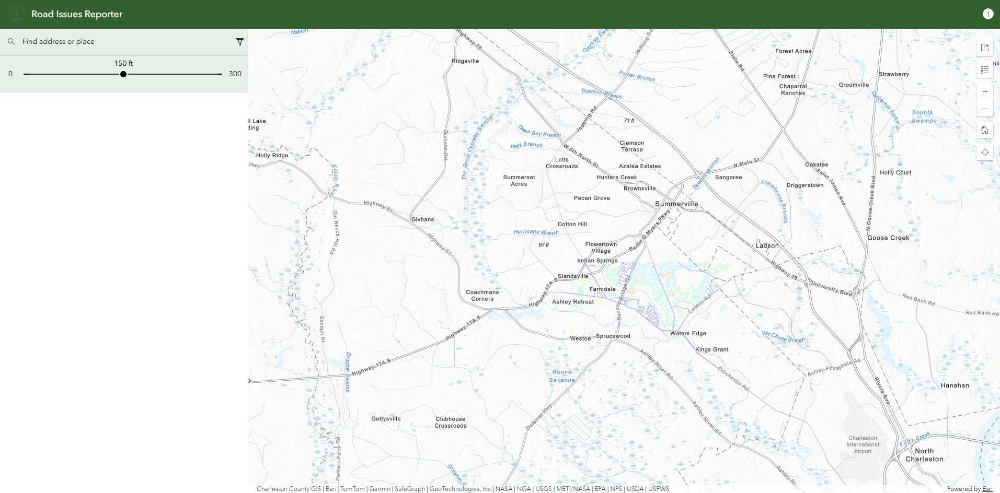
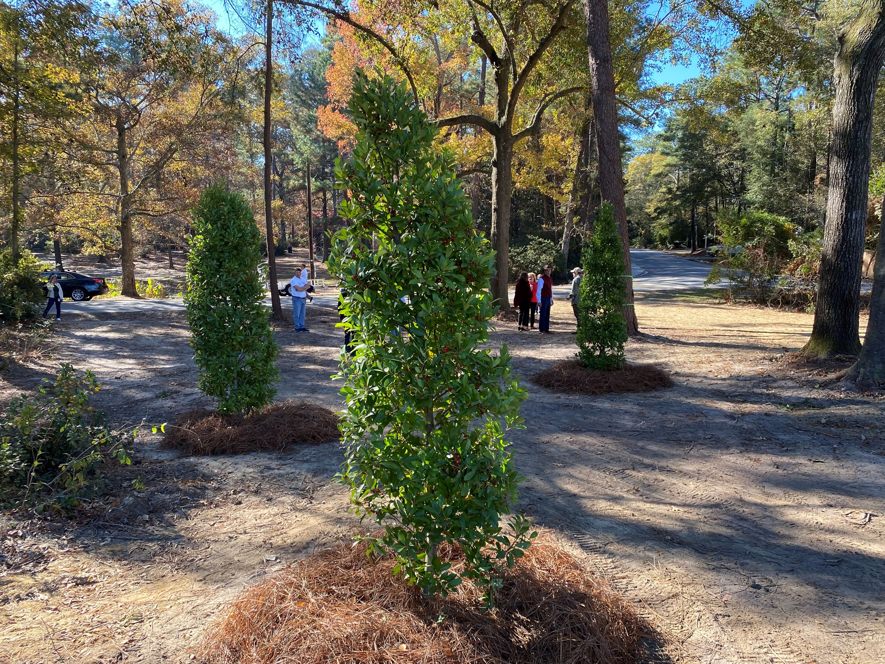
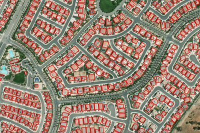
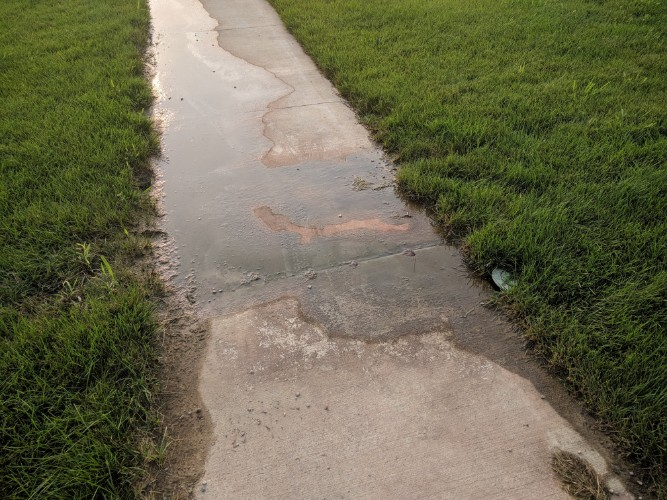
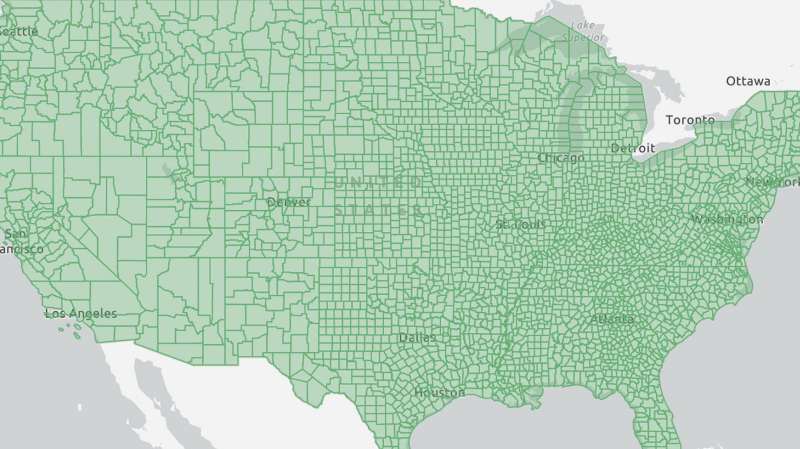

Town of Summerville, SC — Lead GIS Coordinator & Drone Pilot

Summerville's first public GIS Hub Site
Built the town's first public-facing GIS presence from the ground up — creating a central destination where residents can explore local data, download GIS datasets, and access all web applications in one place. Established Summerville as a data-transparent community and gave GIS a visible role in town government.
View live site ↗
Development projects dashboard
Gave residents a live window into development activity across town by connecting directly to planning department records. Citizens can check the status of projects in their neighborhood — whether newly permitted, under construction, or completed — bringing transparency to a process that was previously difficult to track.
View live app ↗
Road issues reporter
A public-facing reporting tool allowing residents to submit road condition issues directly — with submissions routed to the correct agency based on road ownership across Summerville's three-county coverage area. Reduced misdirected citizen calls and improved coordination between town and county road crews.
View live app ↗
Tree canopy inventory & public explorer
Led a full-cycle project from field data collection to public application. Designed a Field Maps workflow for interns to inventory all park trees with spatial locations and detailed attributes. The collected data was then published as an interactive public explorer on the Hub Site — reinforcing Summerville's identity as a tree community and its motto "within the Pine Trees."

Building footprint construction using deep learning
Developed a deep learning model to construct building footprints across the entire town boundary, covering 2016 through 2023. The model was built for perpetual use — designed to run annually so building footprint data stays current as the town grows. A foundational dataset now used across multiple internal planning and analysis workflows.

Impervious surface analysis — flood-prone neighborhoods
Applied image classification techniques to calculate the percentage of impervious surfaces per parcel in flood-prone neighborhoods across Summerville. Provided planners and stormwater staff with parcel-level data to better understand runoff risk and inform targeted drainage and land use decisions in the town's most vulnerable areas.

Addressing process reconfiguration
Reconfigured the town's addressing workflow to integrate directly with third-party permitting software — streamlining the creation of multiple addresses simultaneously and adding automated warnings for applicants about properties located in critical zones such as flood plains and easements. Reduced manual steps and improved accuracy at the point of permit submission.